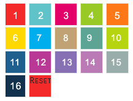

Built with Bootstrap 3.0 framework.
Thank you for purchasing my theme. If you have any questions that are beyond the scope of this help file, please feel free to email via my user page contact form here. Thanks so much!
The Spic Lounge - is a responsive html5 Bootstap template designed for restaurents, Hotel, Cafe, Lounge, Bars websites. Html files make everything clear and easy to customize. In this template there are 16 different vibrant colors to choose from. This has typical descriptive pages like Home, About, Chef-Bio, Menu, Gifts Cards, Contact, Gallery, Today's Specials, Weekly Specials, Lounge Bar, Catering, Private Dining, Events, Contact and Reservation page with working php form, 9 Menu types, 3 Home page styles, 2 Sliders..
About Bootstrap 3.0--Sleek, intuitive, and powerful mobile first front-end framework for faster and easier web development. Do know more about Bootstrap click here
Downloaded Zip contains 2 type of sites.
3 different versions---------------- White-Version / Dark-Version / 10-Different-Sites
List of HTML files
1.index.htm ( Default Version- TILED BACKGROUND SLIDESHOW)
2.index-cycle-slider.htm
3.index-Vegas.htm (Youtube Video)
4.index-video.htm (Youtube Video)
5.index-minimal.htm
6.index-vegas-another-version.htm
Special pages
About,
Chef-Bio,
Menu,
Gifts Cards,
Contact,
Gallery,
Today's Specials,
Weekly Specials,
Lounge Bar,
Catering,
Private Dining,
Events,
Contact and Reservation page with working php form,
9 Menu types
PHP: contact-smtp-form.php , reservation-general-form.php,reservation-smtp-form.php,contact-general-form.php
3 different versions---------------- White-Version / Dark-Version / 10-Different-Sites
The general template structure is the same throughout the template. Here is the general structure.
This template has Responsive layout. This zip archive contains 1 html file and 1 php files..
<!DOCTYPE html>
<html lang="en">
<head>
<meta http-equiv="Content-Type" content="text/html; charset=utf-8" />
<meta name="viewport" content="width=device-width, initial-scale=1.0" /> <title>The Spice Lounge</title>
<meta name="description" content="The Spice Lounge" />
<meta name="keywords" content="The Spice Lounge" />
<meta name="author" content="The Spice Lounge" /> <!-- Site Css --> CSS Files are added here <!-- // Site Css --> <!-- Loading Google Web fonts --> Fonts here <!-- Google Fonts --> <!-- Favicon and media icons --> <!-- // Favicon and media icons --> </head> <body> <!-- Preloader --> <!-- // Preloader end--> <!--Wrapper >
=============================-->
<div id="wrapper">
<div id="mask">
<!--Header
=============================--> <div id="header" class="header">
<div class="menu-inner"> <div class="container"><div class="row">
<!-- Logo section -->
<div class="brand"><a href="#home">The <span> Spice </span>Lounge</a></div>
<!-- // Logo section -->
<!-- Menu section -->
<nav class="main-nav"> <nav class="main-nav"> <a href="#" class="nav-toggle"></a> <ul class="nav"> <li class="home"><a href="#">Home</a></li> <li class="aboutus"><a href="#">About Us</a></li> </ul> </nav> <!-- // Menu section --> <!-- // Header
=============================--> <!--content Sections =======================--> <div id="home" class="item">
<img src="assets/img/2.jpg" alt="The Spice Lounge" class="fullBg">
<div class="clearfix">
<div class="header_details">
<div class="container"> content </div> <!--Home Section ======================-->
<!--About us
=============================--> <div id="about" class="item">
<img src="assets/img/12.jpg" alt="The Spice Lounge" class="fullBg">
<div class="content">
<div class="content_overlay"></div>
<div class="content_inner">
<div class="row menuscroll">
<div class="container"> Cotent goes here </div>
</div>
</div>
</div>
<!-- // About us -->
</div> </div><!-- // Wrapper =============================--> <!-- JS Script --> Script Goes here <!-- // JS Script --> </body> </html>
If you would like to use the Pre Defined colours, you would do the following: 16 Pre Defined colours are available.
For changing the colors..
Open the index.html change the css name in the index.html line no 27.
<link type="text/css" rel="stylesheet" href="assets/css/colors/color24.css" id="color"/>
For Pink color style1.css <link href="assets/css/colour1.css" rel="stylesheet" type="text/css" id="color" />

colour_1.css= 1 represents the color name
For Example 2.green -assets/css/colors/color2.css
15.Violet -assets/css/colors/color14.css
or Simply edit the colour code in the colour1.css to any colour
For Removing Side Setting panels
Step 1. open index.html go to line remove those lines.
<!----------------------------------------------------------
/*settings-panel START */
----------------------------------------------------------->
<link href="css/settings.css" rel="stylesheet" type="text/css" />
<!-- settings-panel -->
blah blah blah--- -- .................ETC
<!----------------------------------------------------------
/*settings-panel END */
----------------------------------------------------------->
Step2 Removing JS file remove the below 3 lines. <!-- settings-panel Demo Purpose Script -->
<script type="text/javascript" src="js/settings/settings.js"></script>
<script type="text/javascript" src="js/settings/jscolor.js"></script>
jQuery Page Sliding.
assets/js/customs_general.jsFor more information kindly check this site http://demos.flesler.com/jquery/scrollTo/
/****************************************************************************** Navigation on click/ on load / on hasch chage scroll to ******************************************************************************/ jQuery(document).ready(function($){ "use strict"; $("#header").click(function (e) { e.preventDefault(); }); $("#mainheader").click(function (e) { e.preventDefault(); }); //on page load show from hash index.html#about /*********************************************************************************/ var url = window.location.href; var type = url.split('#'); var hash = ''; if(type.length > 1) { hash = type[1]; } if (hash!=""){ var hash_fullname= "#" + hash; $( "a[href='"+hash_fullname+"']" ).addClass('selected'); if(hash_fullname=="#home"){ // hiding subpage header $('#header').hide('fade', { direction: 'left', easing: 'easeInQuad' }, 1000); Animation("#header","fadeOutUp","200"); } else { // hiding Home page header $('#mainheader').hide('fade', { direction: 'left', easing: 'easeInQuad' }, 600); Animation("#mainheader","fadinUp","200"); } $('#wrapper').scrollTo(hash_fullname, 2000, {easing:'easeInOutExpo', axis:'x', onAfter:function(){ // scrollto callback function if(hash_fullname=="#home") { // for home page animation Homepage_Animation(); } else { // sub page animation if ( $('#header').is(':hidden')){ // if header is hidden then do animation Subpage_animation(); } } } // scrollto callback function close });// scrollto close }// hash!="" close // on click navigation /*********************************************************************************/ $('.main-nav a.nav-link,.brand a.nav-link').click(function () { var name = $(this).attr('href'); if(name!="#") { // if navigation not equalt to "#" if(name=="#home"){ $('#header').hide('fade', { direction: 'left', easing: 'easeInQuad' }, 1000); Animation("#header","fadeOutUp","200"); /*************************************************** //custom animation functions ***************************************************/ function Animation(element,effect,timedelay) { $(element).delay(timedelay).removeClass().addClass(effect + ' animated').one('webkitAnimationEnd mozAnimationEnd MSAnimationEnd oanimationend animationend', function(){ $(this).removeClass(); }); }; function Homepage_Animation() { $('#mainheader').show('fade', { easing: 'easeInQuad' }, 900); Animation("#mainheader","fadeInUp","200"); Animation("#spmenu1","fadeInRight","300"); Animation("#spmenu2","fadeInRight","800");
Here's a list of the stylesheet files I'm using with this template, you can find more information opening each file:
| File Name | Description |
|---|---|
animate.min.css |
Animate.css - http://daneden.me/animate... for more |
bootstrap.css |
Bootstrap 3.0 Global CSS settings, fundamental HTML elements styled and enhanced with extensible classes, and an advanced grid system ... for more |
bootstrap-datetimepicker. |
Bootstrap-datepicker provides a flexible datepicker widget in the Twitter bootstrap style. |
component.css |
which contains some code for Home Tiled Background slide show |
cycleslider.css |
which contains Cycle Slider CSS // For Home page slider |
font-awesome.css |
Font Awesome gives you scalable vector icons that can instantly be customized — size, color, drop shadow, and anything that can be done with the power of CSS. |
menu.css |
css used for common menu styles |
style.css |
This file contains most of the css used by the theme . |
video_styles.css |
This file contains most of the css video slide |
vegas_styles.css |
This file contains most of the css vegas slide |
colors/colour1.css to colors/colour17.css |
these files are predefined colours see the above Markup section / Pre Defined Colors for more details . |
The second file contains all of the specific stylings for the page. The file is separated into sections using:
/* Table Of Content
==============================*/
/*
1.Base styles
Header
Scrollbar
Preloader css
CSS3 ANIMATIONS PRELOADER CIRCLE
Placeholder css
Horzontal settings
2.Header Section
3.Home Section
4.About Section
5.Menu Section
8.Pages SECTION
Gift Cards
Chef Bio SECTION
Locations
Private Dining
Catering
9.Event Section
10.Reservation Section
11.Contact Section
12.Home page Special Menu SECTION
13.Video Section
14.media quiries
All JS files are located in the /assets/js/ directory.
| Tag | Description |
|---|---|
ajaxify-html5.js |
Ajaxify your entire website instantly with this simple drop-in script using the HTML5 History API with History.js and jQuery ScrollTo. |
bootstrap.min.js |
Bring Bootstrap's components to life with over a dozen custom jQuery plugins. Easily include them all, or one by one |
bootstrap-datetimepicker.min.js |
Date/Time Picker for Twitter Bootstrap used easily to pick date and time |
boxesFx.js |
Tiled Slideshow script boxesFx.js v1.0.0 http://www.codrops.com |
classie.js |
* classie - class helper functions - from bonzo https://github.com/ded/bonzo |
custom_general.js |
Most of the animation in this site is carried out from the customs scripts. There are a few functions worth looking over. |
custom-boxes.js |
cusotm script for Tiled Slideshow script |
jpreloader.min.js |
jPreLoader -A Loading Screen to preload images & content for website using jQuery |
jquery-1.11.1.min.js |
jQuery is a Javascript library that greatly reduces the amount of code that you must write. | jquery.cycle.all.js |
jQuery Cycle Plugin is a slideshow plugin that supports many different types of transition effects.jQuery Cycle2; version: 2.1.5 |
jquery.easing-1.3.js |
Uses the built in easing capabilities added In jQuery to offer multiple easing options. |
jquery.fitvids.js |
A lightweight, easy-to-use jQuery plugin for fluid width video embeds. |
jquery.history.js |
Super-seeded by github.com/balupton/history.js - jQuery History allows you to easily track changes of the pages state by tracking URL Hashes |
jquery.mb.YTPlayer.js |
A chrome-less player for YouTube movies! Use this player to show your favorite YouTube movies on your page! |
jquery.mousewheel.min.js |
A jQuery plugin that adds cross-browser mouse wheel support. |
jquery.nicescroll.min.js |
Nicescroll is a jquery plugin, for nice scrollbars with a very similar ios/mobile style. |
jquery.scrollTo.min.js |
A jQuery plugin to make anchor navigation work with a smooth animation, made by Ariel Flesler |
jquery.slicknav.min.js |
SlickNav Responsive Mobile Menu v1.0.0 |
jquery.validate.min.js |
This file contains jQuery-plugin-validation |
jquery-ui.min.js |
http://jqueryui.com-(Custom Build) |
modernizr.custom.js |
Modernizr 2.6.2 (Custom Build) |
retina-1.1.0.min.js |
For Higher Resolution devices |
jquery.vegas.js |
Vegas – Fullscreen Backgrounds and Slideshows with jQuery. |
wait.js |
cusotm wait and auto play for Tiled Slideshow |
The Template archive include 2 PHP file .contact_form.php and reservation_form.php- it is file that send mail:
//Prefedined Variables
$to = "contact@yourmail.com";
// Email Subject
$subject = "Contact from your website.";
// This IF condition is for improving security and Prevent Direct Access to the Mail Script.
if($_POST) {
// Collect POST data from form
$name = stripslashes($_POST['name']);
$email = stripslashes($_POST['email']);
$phone = stripslashes($_POST['phone']);
$attending = stripslashes($_POST['attending']);
$guest = stripslashes($_POST['guest']);
$message= stripslashes($_POST['message']);
// Collecting all content in HTML Table
$content='';
// Define email variables
$headers = "From:".$email."\r\n";
$headers .= "Reply-to:".$email."\r\n";
$headers .= 'Content-type: text/html; charset=UTF-8';
if( ! empty($name) && ! empty($email) && ! empty($content) ) {
// Sending Email
if( mail($to, $subject, $content, $headers) ) {
print "Thank you, we will getback to you shortly
";
return true;
}else {
print "Some errors to send the mail.";
return false;
}
}
else {
print "Some errors to send the mail.";
return false;
}
}
we have not included any psds with this theme
To Setup The Spic Lounge --Responsive Restaurant/Cafe Template.
I've used the following images, icons or other files as listed.
if you have any questions or if you need any support, please mail us @ Email: suresh@edigitaldreams.com.
Once again, thank you so much for purchasing this theme. As I said at the beginning, I'd be glad to help you if you have any questions relating to this theme. No guarantees, but I'll do my best to assist. If you have a more general question relating to the themes on ThemeForest, you might consider visiting the forums and asking your question in the "Item Discussion" section.
Regards
Suresh Govi